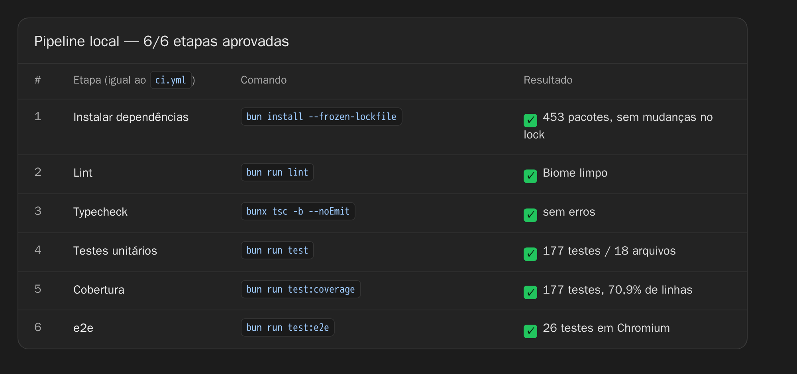

Combogó Unicap · Gestão de Laboratório
Resultado da pipeline local de verificação contínua — lint, typecheck, testes unitários, cobertura e testes de ponta a ponta.

ci.yml e os resultados obtidos no commit 3ff0aed.
| # | Etapa | Comando | Resultado |
|---|---|---|---|
| 1 | Instalar dependências | bun install --frozen-lockfile | 453 pacotes · lock inalterado |
| 2 | Lint | bun run lint | Biome limpo |
| 3 | Typecheck | bunx tsc -b --noEmit | sem erros |
| 4 | Testes unitários | bun run test | 177 testes / 18 arquivos |
| 5 | Cobertura | bun run test:coverage | 177 testes · 70,9% de linhas |
| 6 | Testes e2e | bun run test:e2e | 26 testes em Chromium |
O comando bun install --frozen-lockfile é a primeira etapa do
workflow e garante que o bun.lock versionado está consistente
com o package.json — é o mesmo teste que o CI executa.
| Arquivo | Escopo coberto | Testes |
|---|---|---|
| navigation.test.tsx | Sidebar por projeto, Projetos ativos e as 6 seções | 4 |
| windows.test.tsx | Lixeira, Templates, Minhas Anotações, Equipe e atalhos | 17 |
| authFlow.test.tsx | Landing, rota protegida, returnTo e validações | 7 |
| sprints.test.tsx | Criação, renomeação e exclusão de sprints no Kanban | 4 |
| penteFino.test.tsx | Janelinha de notificações e eventos recentes | 6 |
| richText.test.tsx | Editor de texto rico | 5 |
| usability.test.tsx | Atalhos, foco e acessibilidade básica | 4 |
| components.test.tsx | Componentes compartilhados (Logo, Toast, ConfirmDialog) | 6 |
| importDoc.test.tsx | Importação de documentos por arraste/seletor | 9 |
| export.test.ts | Exportação de notas e relatórios | 17 |
| dashboardsStore.test.tsx | Store de dashboards e projetos | 11 |
| trashStore.test.tsx | Lixeira: exclusão, restauração e limpeza | 12 |
| notesStore.test.tsx | Store de notas e vínculo com sprints | 8 |
| deadline.test.ts | Prazos: atrasos, hoje e próximos dias | 20 |
| format.test.ts | Formatação de datas e textos | 17 |
| helpers.test.ts | Tempo relativo, status e ordenação do Kanban | 14 |
| templates.test.ts | Catálogo de modelos | 6 |
| backendConfig.test.ts | Seleção do modo de backend (Convex × local) | 10 |
| Arquivo | Fluxos verificados no navegador | Testes |
|---|---|---|
| landing.spec.ts | Proposta do produto, CTAs e “Ver demonstração” → /auth | 3 |
| acesso.spec.ts | Rota protegida, returnTo após login e 4 validações do formulário | 4 |
| navegacao.spec.ts | Visão geral em /app, sidebar por projeto, Projetos ativos e as 6 seções | 4 |
| sprints.spec.ts | 4 colunas base, criar/renomear, exclusão com confirmação e persistência após reload | 3 |
| lixeira.spec.ts | Contagens, filtros, busca e restauração com toast | 4 |
| templates.spec.ts | Catálogo de 6 modelos, filtro por categoria, busca e “Usar modelo” | 4 |
| equipe.spec.ts | 4 equipes, tabela de membros, busca, filtro e escopo de projeto | 4 |
| Métrica | Cobertura | Situação |
|---|---|---|
| Linhas | 70,9% | aprovado |
| Statements | 71,5% | aprovado |
| Funções | 61,3% | aprovado |
| Branches | 57,5% | aprovado |
As funções novas de backend (convex/projects.ts,
convex/profiles.ts, convex/firestore.ts) são
validadas pelo typecheck, mas ainda não têm testes de comportamento:
exercitá-las exige convex-test e a geração de tipos, que não
roda neste ambiente.
| Runtime / gerenciador de pacotes | Bun 1.3.14 |
| Node.js | v22.23.1 |
| Testes unitários | Vitest 5.0.1 + jsdom 30 + Testing Library |
| Testes de ponta a ponta | Playwright 1.64.1 + Chromium 156 (headless) |
| Qualidade de código | Biome + TypeScript (tsc -b --noEmit) |
bun install --frozen-lockfile # 1. dependências bun run lint # 2. Biome bunx tsc -b --noEmit # 3. typecheck bun run test # 4. 177 testes unitários bun run test:coverage # 5. cobertura bun run test:e2e # 6. 26 testes e2e (Chromium)
Observação sobre o CI no GitHub: a execução remota
(run 42027159837, commit 3ff0aed) não chegou a
iniciar nenhum passo — o job foi recusado antes da atribuição de runner
com a anotação “The job was not started because your account is
locked due to a billing issue”. A aprovação registrada neste
relatório é a execução local dos seis mesmos comandos do
.github/workflows/ci.yml.